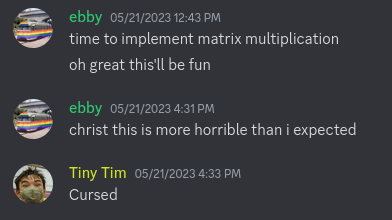
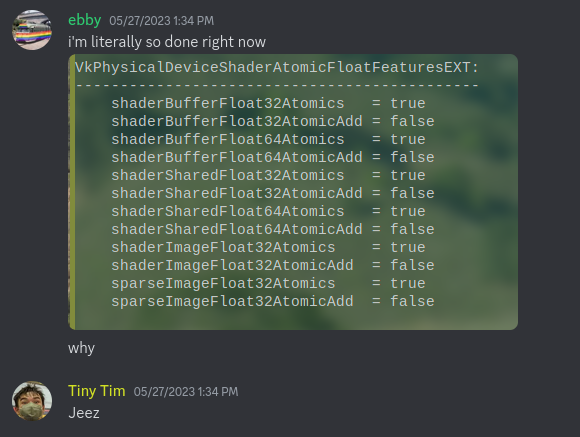
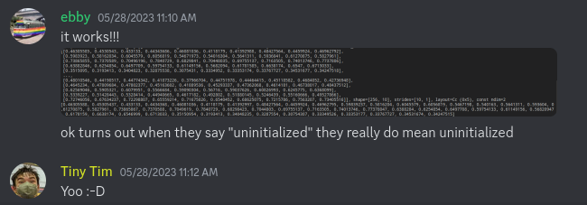
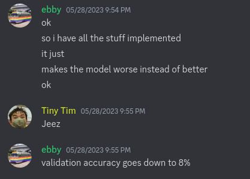
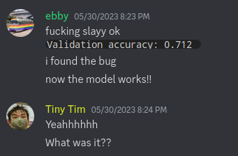

Documented here is a brief period of madness I slipped into last May, a completely unnecessary and self-inflicted source of stress at a time when I really didn't need any.
It was nearing the end of my junior year of high school. For the last 4 weeks of my Machine Learning class, we each worked on independent projects of our choice. This was the project I decided to take on: to program a one layer, fully connected neural net with softmax loss and stochastic gradient descent trained on MNIST on the GPU, from scratch.
MNIST is a collection of grayscale 28x28 images of handdrawn numbers -- given such an image, the model should determine what number it represents. Theoretically it should have been very simple: it's only one layer, no frills, and I'm training it on the simplest data set out there. A good proof-of-concept exercise, nothing too ambitious for just 4 weeks. Should be quick, right?
Implementing the net on the CPU was very straightforward. The code for it is not especially complicated, you can read it if you are interested in how it actually works.
The short of it is that training this model consists in these steps:
- Multiplying a (batch_size x 784) matrix with a (784 x 10) matrix, then adding to it a (1 x 10) matrix and exponentiating the elements.
- Normalizing the values in a (784 x 10) matrix by columnwise vector.
- Subtracting a value from each row of a (batch_size x 10) matrix, then dividing every element by a constant.
- Transposing a (batch_size x 784) matrix, multiplying it by a (batch_size x 10) matrix, then adding a (784 x 10) matrix.
- Summing the rows of a (784 x 10) matrix.
- Adding/multiplying elementwise two (784 x 10) matrices and two (10 x 1) matrices.
for (arbitrarily chosen) batch_sizes 256 or 512.
I'm sure that an off-the-shelf library could have micro-optimized every aspect of this into something which runs pretty efficiently on any GPU, but I had little GPU compute experience outside of graphics-oriented compute shaders.
So, I decided to tackle everything naively and without looking at actual implementations, using wgpu and writing it all in WGSL compute shaders. This way, I wouldn't have to spend weeks learning a new technology. I made a provisional sketch of the architecture.
Matrix multiplications would be handled by running shaders elementwise on the output matrix, writing to each node the dot product of the multiplicands' row and column vectors corresponding to that element. The most naive approach there is.
It would use four buffer bind groups: one for the model (weight + bias buffers), two for batches: one in flight, one being copied to (each with separate image and index buffers), one for the current scores/gradients, and one to output the current loss. In push constants (for convenience) we have the step size, batch size, and regularization constants.
It would have four sequential passes: calculate the scores, the loss, the gradient, and finally do the backpropagation. In the background we have a pending CPU-GPU transfer op to move the latest randomized batch onto the GPU. So, I started programming.

As it turned out, WGSL did not support atomic floating point arithmetic, which were necessary for my matrix multiplication. I asked the wgpu developers on their matrix chat, and they said that it was a thing they intended to eventually get around to doing.
So, instead, I rewrote my test shader in GLSL, which does have support for atomic floating point numbers (GL_EXT_shader_atomic_float), and I used direct SPIR-V passthrough to send it to wgpu.
Thing is, naga's validator refused to accept the SPIR-V as valid, containing an instruction for which it had no support. I forked naga and removed the check -- surprise surprise the program segmentation faulted.
Yeah, Vulkan extensions need to be enabled before they can be used. So I forked wgpu, and manually added the extensions to the Vulkan path to see what would happen. Note that I had been running my project in release mode this whole time. The CPU implementation only performed well in this mode, and I had forgot to remove the flag. A side effect of release mode is that wgpu removes all the Vulkan validation layers, so I was getting no helpful error messaging as I tried to track down everything that I needed to tweak to get it to work.
Having eventually figured out that I needed to turn off release mode, I realized that Vulkan was telling me that my GPU didn't support shaderBufferFloat32AtomicAdd. This made me wonder whether my GPU didn't actually support shaderBufferFloat32AtomicAdd.
Keen-eyed readers may notice that shaderSharedFloat32AtomicAdd *was* supported. I did not notice this in my heightened state. Had I noticed this, I could have continued to leverage my wgpu and naga forks and simply write my shaders to only use shared memory floating point ops. This did not occur to me.
So, what were my other options? I could use fixed radix numbers, their arithmetic is integer arithmetic... but the conversions alone made dealing with fixed radix numbers too annoying. I could use OpenCL, a library which supported atomic floating point addition, and which was specifically designed for computing. But I also had never really used OpenCL before, and I only had 3 weeks so best stick to a technology I know.
So, I made the completely wrongheaded and insane decision to scrap my work and rewrite it all in Vulkan compute shaders, to leverage the shared memory float atomics. In even worse judgement, I decided to use ash, Rust's raw thin bindings to Vulkan, instead of something higher level like vulkano. Whoops.
It was after I had deleted my forks and gotten about 3/4ths the way through the boilerplate necessary to compile a single shader that I realized I could have used shared memory float atomics with just wgpu. But, sunk cost fallacy. So I kept going.

As it turned out, I had two different Vulkan drivers installed: AMD's amdvlk, and Mesa's vulkan-radeon. Only vulkan-radeon had support for any floating point atomic addition, but amdvlk was being used by default because it came first alphabetically. Thankfully this was fixed by just adding an environment variable to override which driver gets used.
Recognize that by now I had far exceeded the amount of time it was reasonably expected I spend on this project, just dealing with the Vulkan boilerplate needed to assemble and allocate the buffers and pipelines and shaders and bind groups (descriptor sets in Vulkan). But I was committed now.
I was working on the first shader: scores.comp, which computes what guesses the model makes for the current batch. It effectively does one matrix multiplication with some other stuff sprinkled on top.
I spent a day dealing with an inscrutable bug: sometimes it would give the right results, sometimes partially right results, sometimes total garbage.

Yeah shared memory is by default uninitialized, not zeroed :P
That embarrassing indiscretion fixed, I had one shader down, 3 to go. Theoretically. I actually ended up needing 5 shaders: I needed a second scores shader to do the columnwise normalization, then a loss shader, then two gradient shaders, one to normalize the scores and the other to do all the backpropagation.
I should note that by now the idea of batch size being encoded in push constants had flown out the window. Because I was using shared memory, I needed to hardcode certain matrix dimensions into the shaders' workgroup sizes, and I just did not have the wherewithal for conditional compiling or dynamically inserting stuff or anything. If I wanted to change the batch size I'd just have to manually go change the values (which I did).
But, after several more hours, I had implemented all the shaders.

Oh.
Two excruciating days of debugging later, I was able to get it to work.

It turned out the problem was in my second gradient shader, I was not transposing a matrix correctly.
There were still problems, though.
[Placeholder]